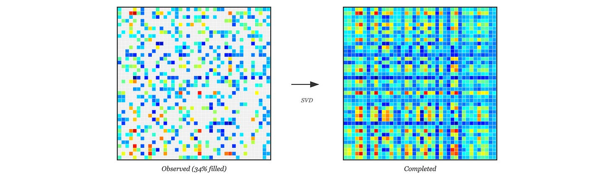
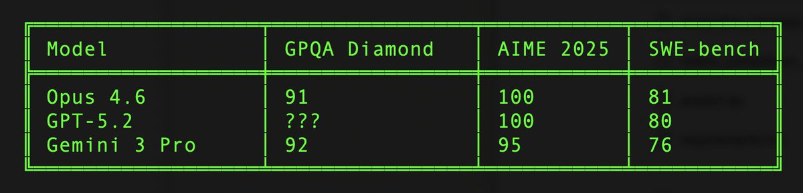
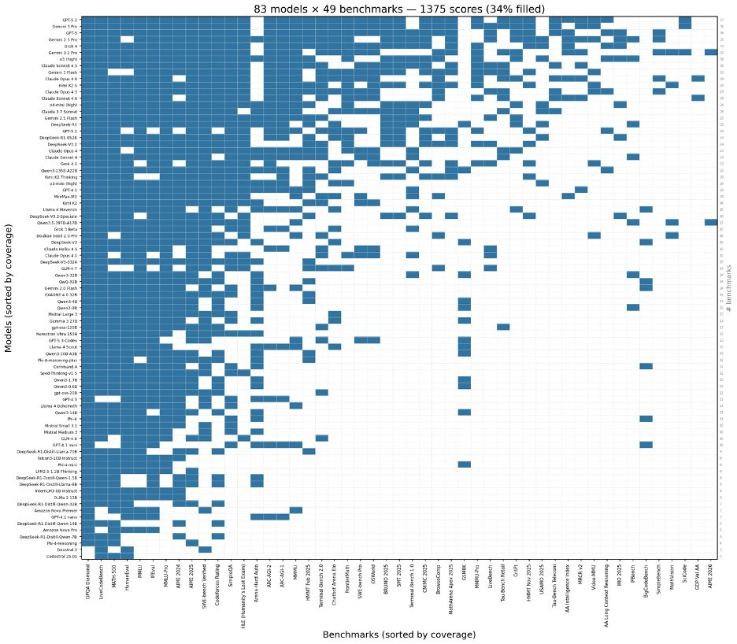
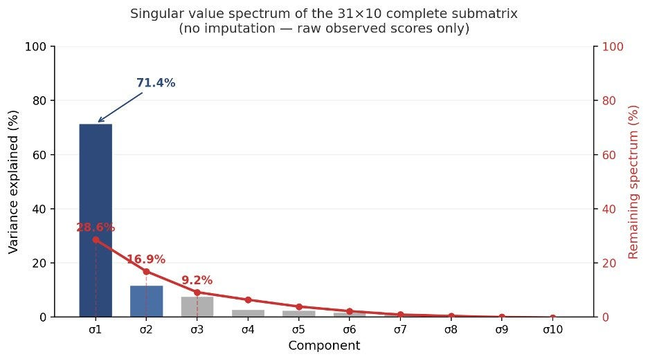
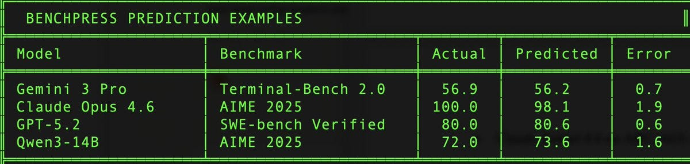
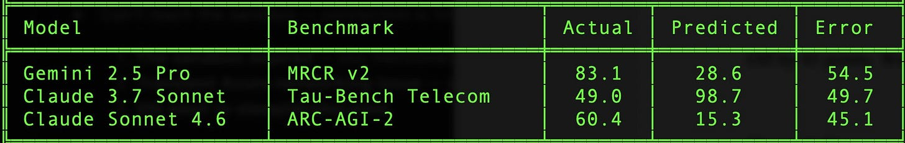
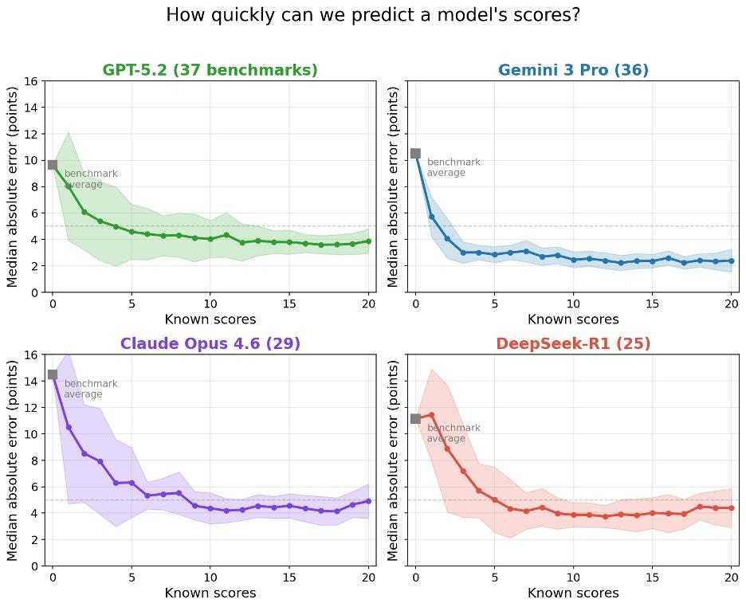
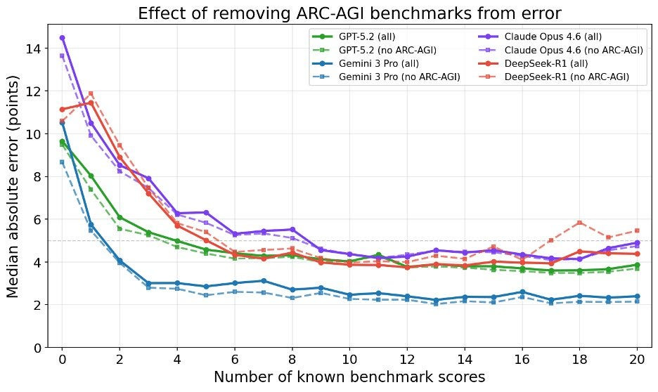
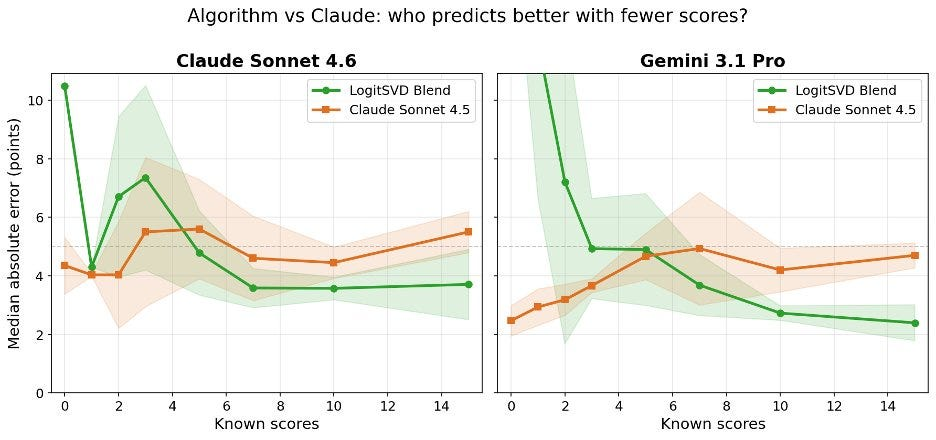
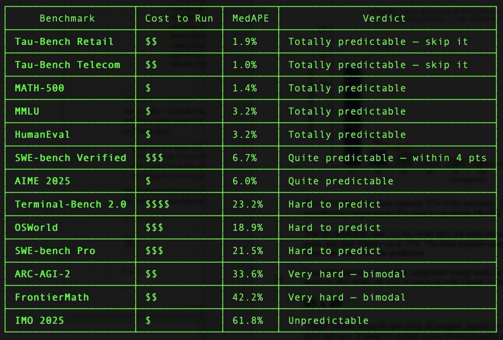

I used Claude Code to build BenchPress a $0 benchmark prediction system, Codex to audit it for bugs, and Claude Sonnet to try to beat it for $1. Here’s what I found: LLM evals are so low-rank (in fact rank 2) that 5 benchmarks can predict the other 44 to within 5 points (and many times less).
Most evals are approximately... redundant.
Let me give you an example for why one should expect this.
Here’s a table with three frontier models and three benchmarks.

What would you guess the missing entry is?
Maybe around 92-94?
Sounds about right, it’s 93.
You didn’t need to evaluate GPT-5.2 on GPQA-D which would have a nontrivial $ cost. What made you guess reasonably well? I hope you won’t find me presumptuous to assume that it’s likely the fact that the rows are nearly identical. In fact, these models, on evals at least, are nearly identical.
The point that I want to stress is that there’s a ton of similarity that shows up everywhere, across models from the same generation, models of similar sizes, evals that test similar skills that correlate almost perfectly (e.g., AIME vs HMMT), and a benchmark that’s hard for GPT-5.2 is hard for Claude Opus 4.6 (e.g., Terminal-Bench 2.0). There’s redundancy in basically every direction you can think of measuring things about these models and benchmarks.
So, a simple question crept in my mind: can you exploit this … low-dimensional structure to predict evals?
Every atom in my brain said yes, and so I wanted to check.
So here goes, a few tens of millions of Claude Code and Codex tokens later...
But a short history lesson first.
An old trick to obtain a million dollar matrix
When I was a grad student, I (and every other EE theory kid 15 years ago) was really into compressed sensing and matrix completion11. E. J. Candes, B. Recht. Exact Matrix Completion via Convex Optimization. arXiv:0805.4471, 2008. (hi @beenwrekt22. @beenwrekt on X.!). The whole point of that theory is: observe a few entries of a matrix, and if you’re lucky and the ground truth matrix is approximately low rank, you can recover the rest from surprisingly few measurements by doing variants of the most classic linear algebra algorithm: Singular Value Decomposition.
There was even a famous $1M Netflix Prize33. “Netflix Prize.” Wikipedia. for this: in 2006, Netflix released a matrix of about 100 million (user, movie) ratings and offered $1M (so like 2.5 weeks of 1024 H100s on Lambda) to whoever could predict the missing ratings 10% better than Netflix’s own algorithm, or something like this. The competition ran for three years, drew tens of thousands of teams, and even though a team did get the $1M, Netflix never actually deployed the winning solution! But if I’m not wrong, the competition basically invented modern recommender systems and launched a few thousand ML careers.
Here’s how matrix completion would work in our (model, eval) setting.
It’s kind of simple.
Suppose each model can be described by a vector of two entries say, how good it is at general tasks and how good it is at hard novel reasoning. And each benchmark is described the same way, e.g., how much it tests general knowledge vs. how much it tests reasoning. The final model score is their dot product.
Say GPT-4o has s = (8, 2): strong on general tasks, weak on reasoning. AIME 2025 has b = (1, 8), that is it’s mostly testing reasoning. Then GPT-4o on AIME 2025 is 8×1 + 2×8 = 24. (Actually, I think that’s close to its true score; didn’t even plan this :D.) Now if MMLU has b = (9, 1), i.e., mostly general knowledge, then GPT-4o on MMLU is 8×9 + 2×1 = 74.
The obvious in hindsight insight is that every (model, eval) entry can be produced by the inner product of two 2-dimensional vectors. We’ll see later that these two dimensions actually tend to explain the data pretty well!
So the game is: observe a few real (model, eval) scores, solve for the hidden vectors, predict the rest.
83 x 49
But first, we need a matrix!
I asked Claude to search and verify all possible (model, eval) pairs it could find between January 2025 and now. It found 83 models across 49 benchmarks, every entry cited with a source URL. I asked Codex to audit the findings for hallucinations and to double-check every entry is valid by independently verifying them.
The final matrix is 34% filled, meaning roughly 1,4k out of ~4k cells have a ground truth number. The rest are missing because Claude couldn’t find a reported score. This is what it looks like:

The 83 models span 21 labs (the usual suspects), and 49 benchmarks (also the usual suspects).
But, is this matrix actually low-rank? Easy to check: find a large fully-observed submatrix and just run SVD on it. The biggest complete block I found is 31 models × 10 benchmarks, and here’s how the singular values look:

The first component alone captures 71% of the spectrum. The first three capture >90%. So yeah, as with every single matrix I’ve ever seen in my whole life, this one is also kinda rank-3 😊
If you’ve ever done matrix completion in your life, you already know exactly how the rest of this post goes.
But, I was still skeptical that matrix completion would work, as it typically operates on much larger matrices. But what’s the cost of checking with Claude Code and Codex, right?
I wanted to know: how many benchmark scores do you need for a given model before you can predict the rest?
Cute question. Let’s find out!
Does matrix completion work on 83x49?
It kind of does! And for good values of “kind of”. The best method which I will now call BenchPress (details in the next section) predicts held-out scores with 7% median, absolute error. To make that concrete, some examples:

Agentic, competition math, coding, small open-weight model are all within a couple points, and I will share all the results in the github repo. But we got some ugly ones too:

Off by 45+ points. Ouch. We’ll come back to why.
BenchPress: A 0$ approximation to your eval suite
The final prediction model has two dead simple ingredients.
Ingredient 1: sparse regression. For each missing cell, find the 5 benchmarks that best predict the target. Concretely: to predict AIME 2025, take another benchmark like MMLU-Pro, plot every model that has scores on both as a point (x = its MMLU-Pro score, y = its AIME 2025 score), and fit a straight line through those points in logit space. The better the line fits, the more MMLU-Pro tells you about AIME 2025. Do this for all 48 other benchmarks, keep the 5 where the line fits best, and average their predictions weighted by fit quality.
Ingredient 2: rank-2 SVD. Imagine every model is a point in 49-dimensional benchmarks space. Rank-2 SVD says: find the best 2D plane through these points such that the projections onto that plane are as close to the real scores as possible. Once you have the plane, every model gets a position on it (2 coordinates) and every benchmark gets a direction on it (2 coordinates) and their dot product gives the predicted score.
Why rank 2? Because we swept ranks 1 through 8 and rank 2 wins. Rank 3 is already worse by half a point, rank 8 blows up to 13% in absolute error. The third singular value looks real in the spectrum that I shared above, but it’s below the noise floor for prediction.
There’s a small problem: 66% of the coordinates are missing for this to work out of the box. A standard algorithm in matrix completion says to start with zeros, or in our case with column averages, then do SVD, project things onto the singular vectors, replace only the missing entries with the projections while keeping observed scores pinned, and repeat until the projections stop changing.
One important detail: Claude Code found that everything should happen in logit space: the logit transform, logit(p) = log(p/(1-p)), stretches scores near 0% and 100% and compresses the middle, so the gap between 88% and 92% gets the weight it deserves. This fix improved final accuracy by 10% or so. I’m sure it’s a standard trick in old school matrix completion.
A convex combination of the two ingredients: 60% of the entry comes from regression + 40% from the SVD. Why? Because Claude Code did a sweep of combinations and that was the best!
No neural networks or metadata used. We (by we I mean Claude) tried KNN instead of SVD, but KNN and the regression are both local methods that make correlated mistakes. Swapping in SVD gave a 14% improvement.
One thing Claude tried that I asked for and also expected to work: feeding BenchPress model metadata e.g., parameter count, provider, reasoning mode, open-weight status. It made things worse. Everything in “14B reasoning model distilled from DeepSeek” is already captured by the model’s pattern across scores. Cool!
Also, Claude tried NMF, PMF, nuclear norm, and ALS, and none was better than good old SVD. You love to see it!
How many benchmarks do you need? Five.
Here’s an experiment: take a model, hide all its scores, then reveal them one at a time in random order. After each reveal, build BenchPress and use it to predict the rest. How quickly does the error come down?
The answer is: fast. With just 1 known score, median error (across all models!) is about 12%. By 5 known scores it drops to 9%. After that at some point it’s diminishing returns as the precision of individual predictions keeps improving but the median stabilizes because a few hard-to-predict benchmarks that stay noisy.
The practical takeaway is that 5 benchmarks are enough to get a good prediction of how the model performs on everything else.
Here are some example prediction error vs number of revealed tests for a few popular models from the past year.

In fact, if you remove ARC-AGIs the error improves :D I’d say that’s a good sign for SVD, bad sign for ARC-AGI.

If you can only pick 5 to eval on, greedy forward selection gives you:
{HLE, AIME 2025, LiveCodeBench, SWE-bench Verified, SimpleQA}
They span four categories and cover both principal components. Under proper holdout they get about 7.8% error, versus 7% for the full method. Not everything, but a practical minimum eval set.
This seems legitimately cool to me!
What does the 2 in rank-2 mean?
The SVD gives you two things: a weight for each benchmark and a score for each model, on each component. The benchmark weights tell you what the component measures. The model scores tell you where each model falls on that axis.
When you extract the 2 top singular vectors (left and right) you get something interesting. I’ll refer to these singular vectors as “components” in the next two paragraphs.
The first pair of components (associated with the max singular value) seem to be about general capability: The benchmarks with the largest weights are GPQA-D, LiveCodeBench, MMLU-Pro, HumanEval, and MMLU. Every model gets a score on this axis: Gemini 3.1 Pro, GPT-5.2, Gemini 3 Pro, Opus 4.6, Kimi K2.5 score highest. At the other end: Qwen3-0.6B, OLMo 2 13B, Qwen3-1.7B, DeepSeek-R1-Distill-1.5B, Falcon3-10B. It’s almost a classifier for frontier vs. small models and, interestingly, closed vs. open.
The second pair of components (associated with the second largest singular value) seems to be about harder, new reasoning tasks, and old vs new frontier models: The benchmarks with the largest weights are SimpleQA, ARC-AGI-2, HLE, ARC-AGI-1, and FrontierMath, these are the hard, novel stuff that frontier models do well on. Benchmarks like MATH-500 and MMLU max out in the opposite direction. On the model side, Gemini 3.1 Pro, Opus 4.6, Gemini 3 Pro, and GPT-5.2 score highest: these are the latest frontier models. At the other end: Claude 3.7 Sonnet, DeepSeek-R1, Gemini 2.5 Flash, o3-mini. These were interestingly frontier in early-mid 2025. Model component 2 is almost a “recency of frontier” measure!
Very interesting!
Where does BenchPress do the worst?
The hardest benchmarks share two traits: either bimodal score distributions (ARC-AGI, IMO, USAMO) or weak correlation with other benchmarks (Terminal-Bench, Arena-Hard). The method relies on benchmark-to-benchmark structure and when it’s not there, the “feature” doesn’t help prediction.
So benchmarks resisting prediction: SimpleBench, ARC-AGI-1 and Terminal-Bench with high errors for predicting them. These are the interesting ones, because they measure something the rest of the matrix doesn’t capture.
Competition math (IMO, USAMO) is bimodal: a model either solves olympiad problems or it doesn’t. You can’t interpolate a step function I guess!
Wait! Can Claude beat BenchPress at guessing scores?
OK, this next part isn’t purely science because some of these models were released before Sonnet’s training cutoff, so Claude might just “know” certain scores. But I was curious: what if you don’t use SVD and regression-type predictors and instead use a one-gazillion-parameter model for that? In this case, Claude 😊
For $0.84, we gave Claude Sonnet the partially-filled matrix as a big CSV and asked it to predict the missing entries. Same holdout, same evaluation.
The result: BenchPress edges out Claude on a fair comparison, 5.8% vs 6.1% median error. Linear algebra beats a trillion-parameter model at filling in a spreadsheet, for free, in under a second. I love it.

At k=0. zero known scores, just the model’s name Claude already predicts Gemini 3.1 Pro’s benchmarks to within 2.5 points!! BenchPress at k=0 can only guess column averages, and is off by 17 points. But by k=5 BenchPress catches up.
The takeaway: Claude’s world knowledge is worth about 5 benchmark scores of information.
After that, linear algebra wins!
Here’s the weird part: Claude actually gets worse as you give it more data. At k=0 it nails Gemini 3.1 Pro at 2.5% error but as you increase to 15 revealed data points the gap increases to 4.7%. Weird! Providing partial scores seems to create a conflict between Claude’s prior knowledge and the prompt. Let’s call it a kind of “retrieval-augmented degradation”.
For BenchPress almost always more data monotonically means better predictions, as you’d expect from any self-respecting early 2000s predictor.
When should you use this?
Three options for getting a number on “how does my model do on benchmark X”:
Option A: Run the benchmark. Cost: $5 to $100k? (I know for a fact TB 2.0 can be O(100k) for some models and harnesses). BUT! You get the true score.
Option B: Predict from the matrix. Cost: ~$0. But with almost everything that is free, it has its issues, in this case your score is within about 5 points. Not great, not terrible.
Option C: Run a cheaper model as proxy? Cost: less than A. But you get the right answer about the wrong model. Hmm maybe not?
But to be serious, the decision is a function of cost and error tolerance. If SWE-bench costs $5,000, and 6% error is fine for a go/no-go, just predict it I suppose. If AIME 2026 costs $2, run it.
Am I convinced? Hmmm.
For frontier labs, honestly probably not really. They’ll run every eval regardless, I would assume. But for smaller groups trying to train a new model, having a quick sanity check could be helpful? I don’t know.
But it doesn’t matter, because this was fun to try!
It’s kind of hilarious that in pretty much any setting where you have an incomplete matrix to complete, it almost always turns out to rank 2 or 5. Matrix completion for the win!
Perhaps the deeper meaning is that most of what we call “evaluation” is measuring the same two things (because we said rank 2, remember?) over and over, and the benchmarks that escape this pattern are the ones testing new capabilities (hello friends at Terminal-Bench!).
But we’ve nevertheless just convinced ourselves we need to climb 100 evals for every model.
So maybe there’s a message here for folks trying to come up with new benchmarks too:
if your eval correlates with existing ones, it’s not adding much. The valuable benchmarks are the ones that are nearly orthogonal to everything else. Here’s how predictable each benchmark is from the rest of the matrix:

Want to try it on your own model?
The full matrix, all 1,375 cited scores, the BenchPress code, and a predict.py44. predict.py — predict.py CLI that takes 5 benchmark scores and predicts the other 44 are open-sourced at https://github.com/anadim/llm-benchmark-matrix55. anadim/llm-benchmark-matrix: Cited 83-model x 49-benchmark LLM evaluation matrix with 18 matrix completion methods. GitHub repository.
Coda
I spent two days on this, mass-prompting Claude Code and Codex, spent 0$ on GPUs, and ended up with a result that would have been a decent workshop paper, If I was writing things more seriously.
I still don’t know what to make of that. Part of me thinks it’s amazing, and enables more research. Part of me wonders what happens when everyone has that, and whether the thing that matters shifts from “can you get the answer” to “did you ask the right question.”
Did I? I don’t know! But I had fun finding out.
Anyway. Matrix completion for the win.
Have fun!
___________________________________________________________
The (model,eval) matrix was assembled from official model announcements, technical reports, leaderboards, and evaluation platforms. Every entry has a source URL. The code was written by Claude Code, audited by Codex, with the audit rebutted by Claude Code and counter rebutted by Codex. They kind of had a bit of a fight about it, and I literally told them don’t fight, be constructive lol.
What did I do? I mostly gave prompts. Sort of.